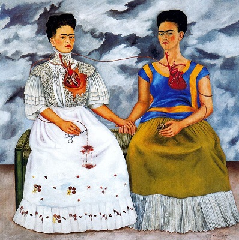

Frida Kahlo
(1907-1954)

because I am the person I know best.”
-Frida Kahlo
Frida Kahlo is considered as one of Mexico's greatest artists. Her works are deeply influenced by bright colors and dramatic symbolism of mexican indigenous culture and personal experiences such as her miscariages and her numerous operations. She says, "I never painted dreams. I painted my own reality" that is why her paintings are an absolute portrayals of pain.
The Two Fridas is one Frida Kahlo's most famous paintings which has been painted on a very large canvas (1.74 × 1.73 metres). This painting shows twin figures holding hands, each figure representing an opposing side of Kahlo. The figure to the left, dressed in a European-style wedding dress, is the side that Rivera purportedly rejected, and the figure to the right, dressed in Tehuana attire, is the side Rivera loved best. The full heart of the indigenous Kahlo is on display, and from it an artery leads to a miniature portrait of Rivera that she holds in her left hand. Another artery connects to the heart of the other Kahlo, which is fully exposed and reveals the anatomy within. The end of the artery is cut, and the European Kahlo holds a surgical instrument seemingly to stem the flow of blood that drips onto her white dress.
Frida Kahlo's fame has been growing after her death. Her Blue House was opened as a museum in the year of 1958. In 1970s the interest on her work and life are renewed due to the feminist movement, since she was viewed as an icon of female creativity. In 1983, Hayden Herrera published his book on her, A Biography of Frida Kahlo, which drew more attention from the public to this great artist. In the year of 2002, a movie named Frida was released, staring alma Hayek as Frida Kahlo and Alfred Molina as Diego Rivera. This movie was nominated for six Academy Awards and won for Best Makeup and Original Score.
References
* Frida Kahlo Foundation- www.frida-kahlo-foundation.org
* Frida Kahlo Paintings, Biography, Quotes- www.fridakahlo.org